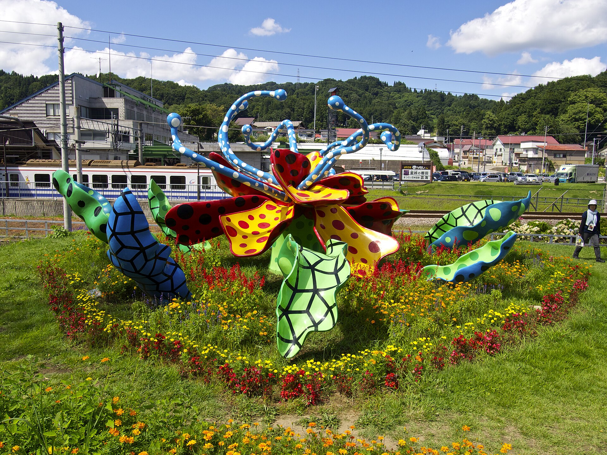
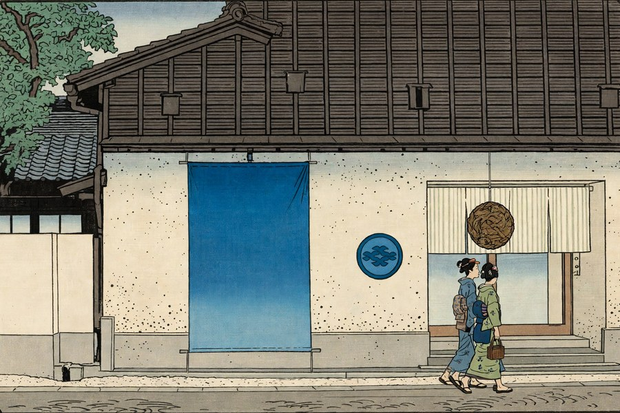
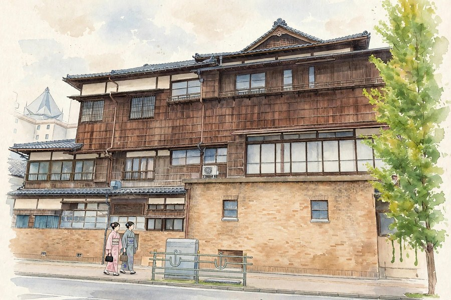
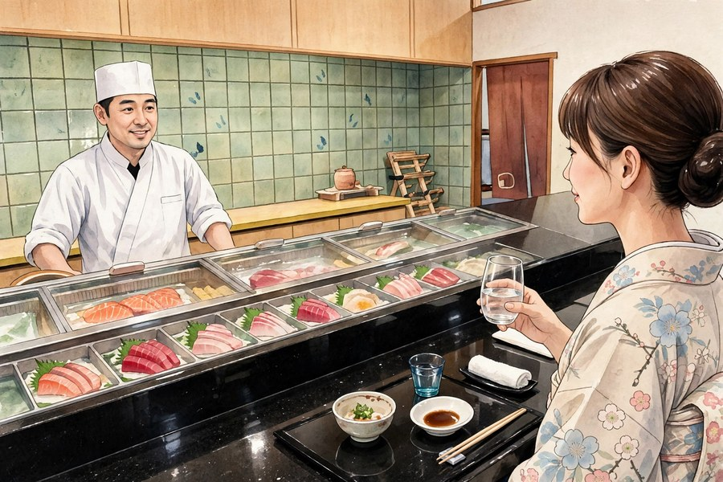

Choisi deux fois
À l'automne 2026, deux des principaux magazines de voyage américains ont publié leurs listes des destinations de 2027. La préfecture de Niigata, sur la côte de la mer du Japon, figure dans les deux — comme la seule destination du Japon dans chacune d'elles. Selon l'Association du tourisme de la préfecture de Niigata, c'est la première fois depuis 2013 que la même préfecture japonaise est choisie la même année par deux des « trois grands » magazines de voyage américains (National Geographic, Condé Nast Traveler, Travel + Leisure).
Première raison : l'art à travers 200 villages
Les deux magazines mettent en avant la Triennale d'art d'Echigo-Tsumari, l'un des plus grands festivals d'art au monde, organisé dans les villages de montagne de Tokamachi et Tsunan. Sa 10e édition se tiendra du 17 juillet au 7 novembre 2027. Les œuvres occupent rizières, écoles fermées et maisons vides dans quelque 200 villages — un art utilisé, comme l'écrit Condé Nast Traveler, pour faire revivre une région rurale de rizières en terrasses et de forêts de hêtres, ce paysage que les Japonais appellent satoyama.


Parmi les noms cités par les magazines figurent le Tunnel of Light aux gorges de Kiyotsu (MAD Architects) et The Last Class de Christian Boltanski, installé dans une école de village fermée. Condé Nast Traveler présente la région comme une réponse au surtourisme : quittez les grandes villes du Japon, plaide le magazine, et voyagez là où les visiteurs aident une campagne à rester vivante.

Un autre artiste, 150 ans plus tôt. Ceux qui viennent pour Boltanski devraient aussi voir Ishikawa Unchō (1814–1883), le maître sculpteur sur bois surnommé « le Michel-Ange d'Echigo ». Au temple Saifukuji, à Uonuma, sur la route entre les collines de la Triennale et la ville de Niigata, le plafond du Kaizandō est couvert de sa sculpture du fondateur zen Dōgen domptant un tigre — un bois peint si dense et si vivant que le temple est surnommé « le Nikkō d'Echigo ». Unchō, lui aussi, travaillait la frontière entre la vie et la mort : un pilier de la salle cache un fantôme dont l'expression change selon l'angle de vue. Deux artistes, à un siècle et demi de distance, posant la même question dans le même pays de neige.
Et mangez sur place. Tokamachi, la scène principale de la Triennale, est aussi l'une des grandes villes du soba à Niigata — le pays du hegisoba. Trois noms à retenir : Kojimaya Sōhonten, fondé en 1922, dont le premier maître passe pour l'inventeur du liant à l'algue funori ; Yoshiya, une adresse de hegisoba et de tempura qu'aimait l'artiste Tarō Okamoto ; et Matsuo, à Matsudai, qui sert un soba au funori fait main avec des tempura de plantes de montagne, juste à côté des œuvres.
Deuxième raison : une culture de la fermentation
La deuxième raison de National Geographic est le goût. Les neiges abondantes, l'eau pure et le riz de Niigata nourrissent depuis des siècles la fermentation — saké, miso et sauce soja. La préfecture compte 88 brasseries de saké, plus que toute autre au Japon, et en hiver beaucoup ouvrent leurs portes pour des dégustations.
À Settaya, un quartier de brasseurs de la ville de Nagaoka, un itinéraire piéton d'environ un mile — le « Hakko Trip » — relie un ancien entrepôt de miso, une boutique historique de dango et une boulangerie, ainsi qu'une brasserie de saké fondée en 1548. Son restaurant HAKKO HOUSE, dirigé par le chef Sho Suzuki, propose un menu en 11 services entièrement bâti sur les aliments fermentés, chaque plat accordé à un saké. Pour tout goûter, direction le Ponshukan, la halle au saké de la gare d'Echigo-Yuzawa — la porte d'entrée du pays de la Triennale. Pour 500 ¥, son mur de machines à déguster verse cinq petites coupes au choix, parmi les étiquettes représentatives des brasseries de toute la préfecture. Niigata City a aussi son Ponshukan, à l'intérieur de la gare de Niigata.
Une fois par an, tout se rassemble dans une même halle. Niigata Sake no Jin, organisé chaque mois de mars au Toki Messe, à Niigata City, est l'un des plus grands festivals de saké du Japon : plus de 80 brasseries de la préfecture y servent plus de 500 étiquettes le temps d'un week-end. Avant la pandémie, il attirait 140 000 visiteurs en deux jours ; l'entrée est aujourd'hui limitée et répartie en sessions du matin et de l'après-midi. Les amateurs de saké y viennent de tout le Japon.
Si vous aimez le vin, ceci vous parlera : le saké, lui aussi, se choisit en accord avec le plat. Et les mets qui l'accompagnent ont leurs propres noms — tsumami, ou ate dans l'ouest du Japon — de petites assiettes pensées pour être savourées lentement, avec la coupe.
Furumachi, à Niigata City, est le quartier où se retrouvent ces amateurs de saké : grandes tables et petits bars populaires s'y côtoient le long des rues. À l'époque d'Edo, Furumachi comptait parmi les trois grands quartiers de geishas du Japon, cité aux côtés de Shinbashi à Tokyo et de Gion à Kyoto — et avec un peu de chance, en vous promenant dans ces rues aujourd'hui, vous croiserez peut-être encore une geigi, une geisha en kimono, en route pour sa soirée. Il est facile d'accès depuis le Toki Messe, où se tient le festival — alors faites du dîner à Furumachi, saké et tsumami à l'appui, une partie de la journée.
→ Furumachi : cent adresses pour manger et boire — les adresses de l'auteur et l'annuaire complet
→ La liste complète : toutes les brasseries de saké de Niigata, par région
→ Les sushis dans la ville de Niigata : là où le poisson et le riz sont tous deux locaux

Guides et cartes
Les annuaires complets derrière cette page — chaque brasserie, chaque adresse de Furumachi et les comptoirs de sushi — chacun avec sa carte.

Les 92 brasseries de saké de Niigata
Toutes les brasseries de la préfecture, classées par région — années de fondation, visites et sites officiels.

Furumachi 100 — là où Niigata boit
Cent adresses pour manger et boire dans l'ancien quartier des geishas, dont les 12 recommandations de l'auteur.

Les sushis de la ville de Niigata
Trente adresses où le poisson et le riz sont tous deux locaux — de l'omakase du chef au kaiten-sushi de Sado.
Le pays de la neige, et une île d'or
Niigata est l'un des endroits habités les plus enneigés de la planète — il peut tomber jusqu'à 12 mètres (40 pieds) de neige dans ses montagnes — avec 55 stations de ski, de Yuzawa (à environ une heure de Tokyo en train à grande vitesse) à Myoko. Au large se trouve l'île de Sado, dont les mines d'or ont été inscrites au patrimoine mondial de l'UNESCO en 2024. À l'été 2027, le festival Earth Celebration de l'île, bâti autour des tambours taiko de Kodo, fêtera sa 40e édition ; l'île abrite aussi le toki, ibis nippon réintroduit, et les petits bateaux tarai-bune.
L'accès à Yuzawa est spectaculaire en soi : un téléphérique vers les pistes part à quelques minutes de la gare d'Echigo-Yuzawa, et en hiver le Shinkansen ouvre même la gare de GALA Yuzawa — une gare saisonnière directement reliée aux pistes. On descend du train, et l'on est à la télécabine.
Et, parole d'habitant : ce que nous ajouterions
Ce guide est réalisé par quelqu'un qui vit dans la préfecture de Niigata. Les deux magazines ont bien choisi — mais ils n'avaient qu'une page chacun. En vivant ici, voici ce que nous ajouterions.
- Ponshukan, honnêtement. Même les habitants s'arrêtent devant ce mur de sakés, étonnés par la variété. Goûtez cinq petites coupes et vous comprendrez pourquoi cette préfecture fermente.
- La Triennale ne ferme jamais vraiment. Environ 200 œuvres restent dans les villages toute l'année. Hors festival, une installation dans une école fermée, sous la neige, peut être à vous seul.
- L'hiver est le vrai Niigata. Ici, la neige n'est pas un décor ; c'est un ingrédient. Elle adoucit les légumes conservés, approfondit le saké et transforme des lieux familiers — le pont Bandai, le sanctuaire de Yahiko — en un autre monde.
- Mangez ce que Niigata mange. Laissez les noms célèbres et commandez ce que les gens d'ici commandent sans réfléchir : un demi-poulet frit aux épices curry chez Sekitori ; les hegisoba — nouilles de sarrasin pétries à l'algue funori, servies en petits nids pliés sur un plateau de bois ; et le tare-katsudon, une escalope de porc trempée dans une sauce soja douce sur du riz, sans œuf. Trois plats, une table de préfecture.


S'y rendre
- Tokyo → Echigo-Yuzawa : environ 1 heure par le Shinkansen Jōetsu. De là, la plupart des visiteurs de la Triennale prennent la ligne Hokuhoku jusqu'aux gares de Matsudai ou de Tokamachi, au cœur du pays de l'art — le mur de dégustation du Ponshukan, dans la gare d'Echigo-Yuzawa elle-même, est donc sur la route de presque tous les visiteurs. La ville est aussi le décor de Pays de neige, le roman de Yasunari Kawabata, prix Nobel de littérature.
- Amateurs de rock, retenez le nom de Yuzawa : chaque juillet, le Fuji Rock Festival remplit la station de ski de Naeba, à Yuzawa — le plus grand festival de musique en plein air du Japon. Oasis, Radiohead, Bob Dylan et Björk ont tous joué sur sa scène principale.
- Tokyo → ville de Niigata : environ 2 heures par le Shinkansen Jōetsu.
- Île de Sado : ferries et hydroptères depuis le port de Niigata (environ 1 heure en hydroptère).
- La région d'Echigo-Tsumari est rurale — une voiture de location ou les bus du festival rendent l'exploration bien plus facile.
Venir à Niigata, en un coup d'œil
Le trajet en 16 secondes d'animation : le Shinkansen depuis Tokyo vers Echigo-Yuzawa et Niigata, la ligne Hokuhoku jusqu'à Matsudai, et les vols directs pour l'aéroport de Niigata — chaque itinéraire avec son temps de parcours.
Music: Erik Satie, Gymnopédie No. 1 (public domain recording); “Fly Me to the Moon” (Bart Howard) — saxophone performance by whytheam, CC BY 3.0, via the Internet Archive.
Lire les articles originaux
- National Geographic — Best of the World 2027 et son guide de Niigata
- Condé Nast Traveler — The 27 Best Places to Go in 2027
- Discover Niigata — le site officiel de voyage en anglais de la préfecture
Pour les lecteurs du japonais : une série en cinq volets qui lit en profondeur les articles originaux des deux magazines — 「新潟はなぜ選ばれたのか」 sur note.